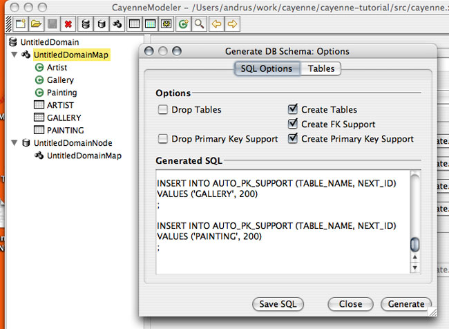

Tutorial Generate Database and Java Classes
CayenneModeler can be used to generate both database schema and Java classes from the single XML model. Very often the database already exists and is maintained independently (e.g., by a DBA). In this case you won't have to go through the first part of this procedure.


Note that often you start by generating classes from the Modeler, but at the later stages of the project the generation is usually automated via Ant cgen task. Both methods are interchangeable.
Now go back to Eclipse, right click on "cayenne-tutorial" project and select "Refresh" - you should see a pair of classes generated for each mapped entity. Note that you should not modify the classes whose names start with "_" (underscore), as they will be replaced on subsequent generator runs. Instead all custom logic should be placed in their subclasses located in "cayenne.tutorial" package - those will never be overwritten by the class generator.

Next Step: Tutorial DataContext